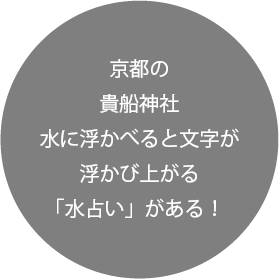
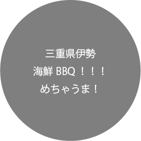

だって、男の人が乗るものじゃない？
そう思われがちなバイク。
実は日常生活では味わえない解放感を引き出してくれる乗り物です。
乗っている人にしかわからない楽しさ。
移動手段だけでは収まらない魅力が、バイクには詰まっているのです







せる
大阪府在住の女子大生
2018.04 中型免許取得
愛車のGSX250Rで旅をして好きなように生きてる人。
普段は普通の大学生としてプログラミングや映像などクリエイティブなことを学んでいる
小さい頃から親や親戚にバイクの後ろや車に乗せられて、
色々なところへ連れて行かれた影響で乗り物に興味を持った。が、正直車種などはよくわからん。
日々面白いこと、楽しいことを探求していて、思い立ったらすぐ外に出る！みたいな日常を送っている